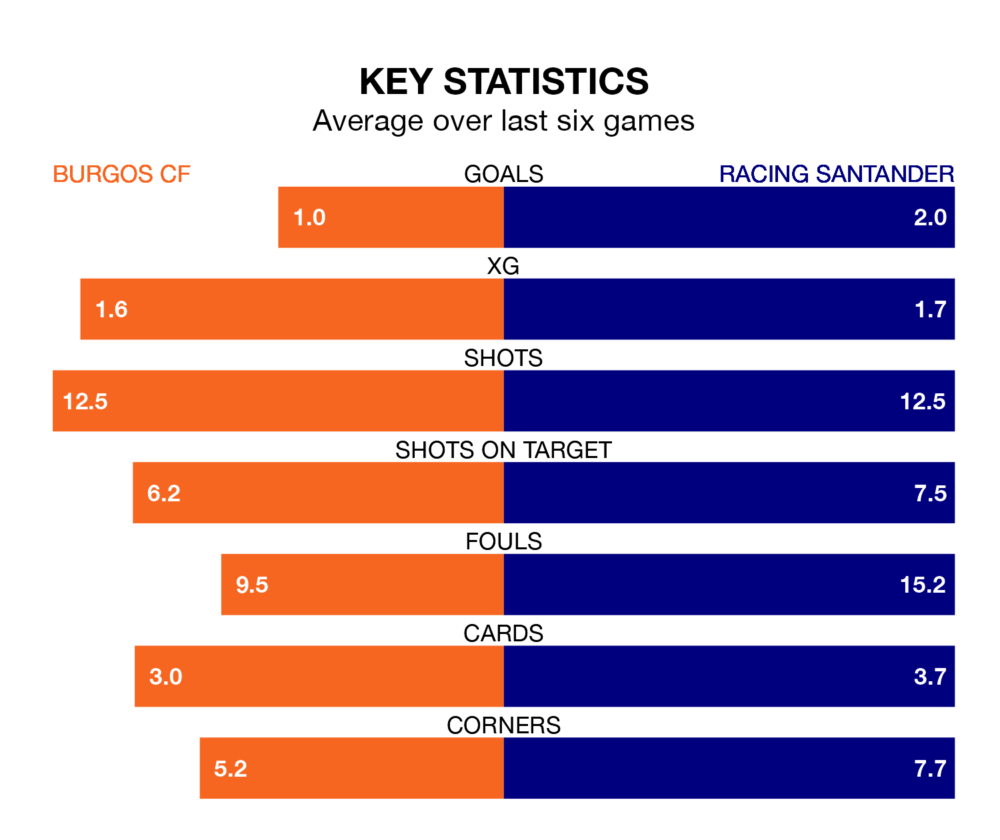

Burgos CF host Racing Santander on Sunday at Estadio Municipal de El Plantío in the Segunda División.
In their last league match, on April 7, Burgos lost to Villarreal B 2-1 away, with their goal scored by Fer Niño.
Racing also lost, 1-0 at home against AD Alcorcón on Monday.
With 54 goals in 34 games so far this season, Racing are the league's second-highest scorers with 1.6 goals per game. But they are conceding more than average too, letting in 48 goals at a rate of 1.4 per game.
Burgos are also above average scorers, with 1.2 goals per game, compared to a league average of 1.1. They have conceded 1.3 goals per game.
In Gerard Fernández Castellano, the visitors have one of the league's sharpest shooters so far this season. He has notched 17 goals in 33 appearances, to sit second in the scoring charts.
His goal rate of one every 140 minutes is quicker than that of Curro Sánchez, the home team's top scorer with a goal every 236 minutes, and a total of 12 goals in 33 games.
In the last 10 years, Burgos and Racing have played each other on 11 occasions. Burgos won three of them, Racing five, and they drew three times.
On average, Burgos scored 0.6 goals and Racing 1.1 in those matches.
Their last meeting was on October 22, when Racing won 3-0 at home.
Racing are sixth in the table after 34 games, of which they have won 15 and drawn eight, earning 53 points.
Burgos are five places behind Racing in 11th, with 14 wins and eight draws putting them on 50 points.
Burgos are in mixed form in the Segunda División, with two wins and two draws from their last six games.
With three wins and two draws over that period, the away side's form is better – they have taken 11 points from 18, compared to the hosts' eight.
Sunday's match will be refereed by Iván Caparrós Hernández, who has taken charge of 17 Segunda División games so far this season, issuing three red cards and booking 87 players. He has awarded five penalties.
The last Burgos game Caparrós Hernández refereed was a 0-0 home draw with FC Andorra on November 25. His last Racing match was their 1-0 win away at SD Amorebieta on February 4.
Updated: 10:01 (UTC), 12/04/24